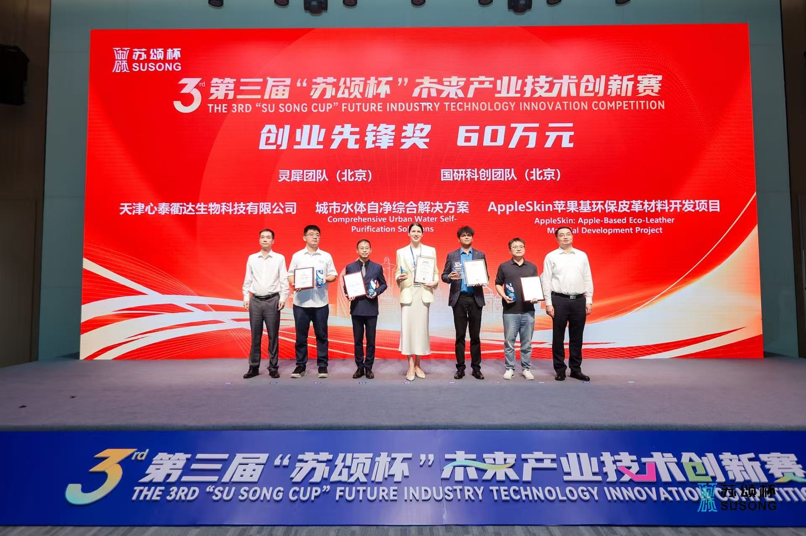
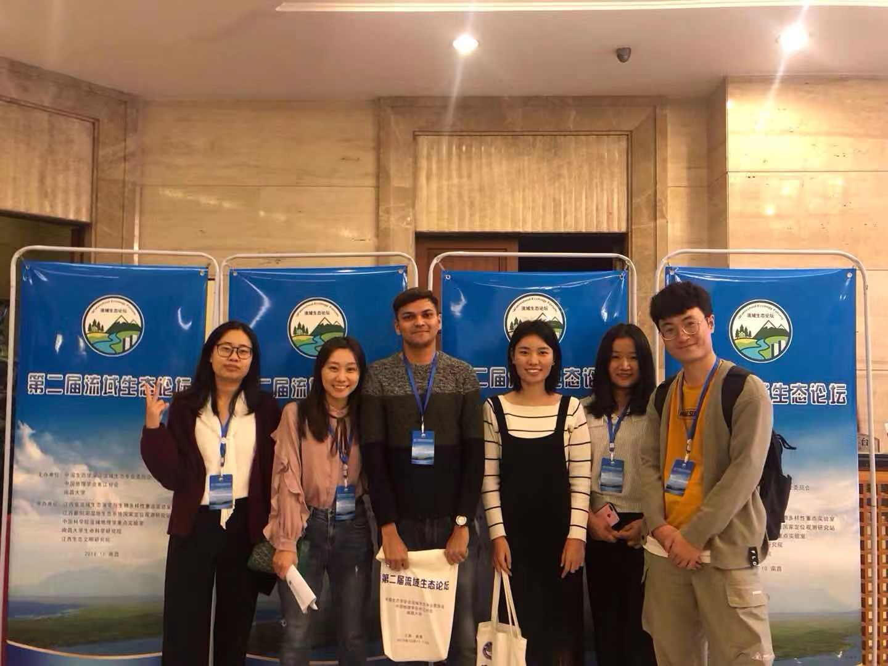
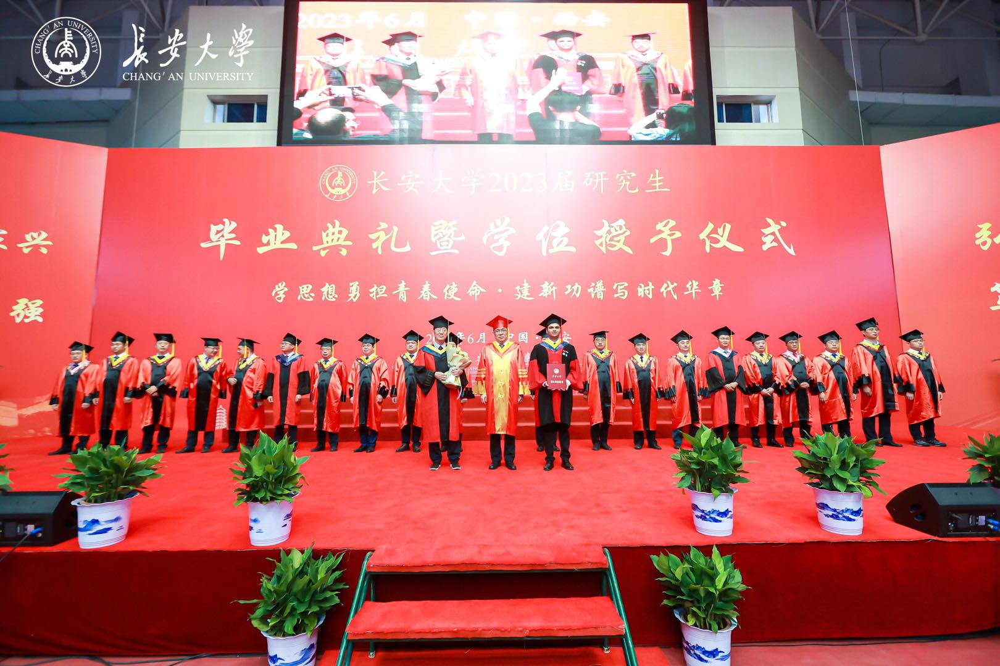

Achievements
Second Prize – SUSONG BRICS Track Final Competition (Future Information Category)
China
2025
Best Paper Presenter
The 2nd River Basin Ecology Forum
Nanchang, Jiangxi, China
2019
Excellent International Student
Xi'an, China
2019
MHRD (India) – CSC (China) Bilateral Scholarship Award
2017
Highlights


